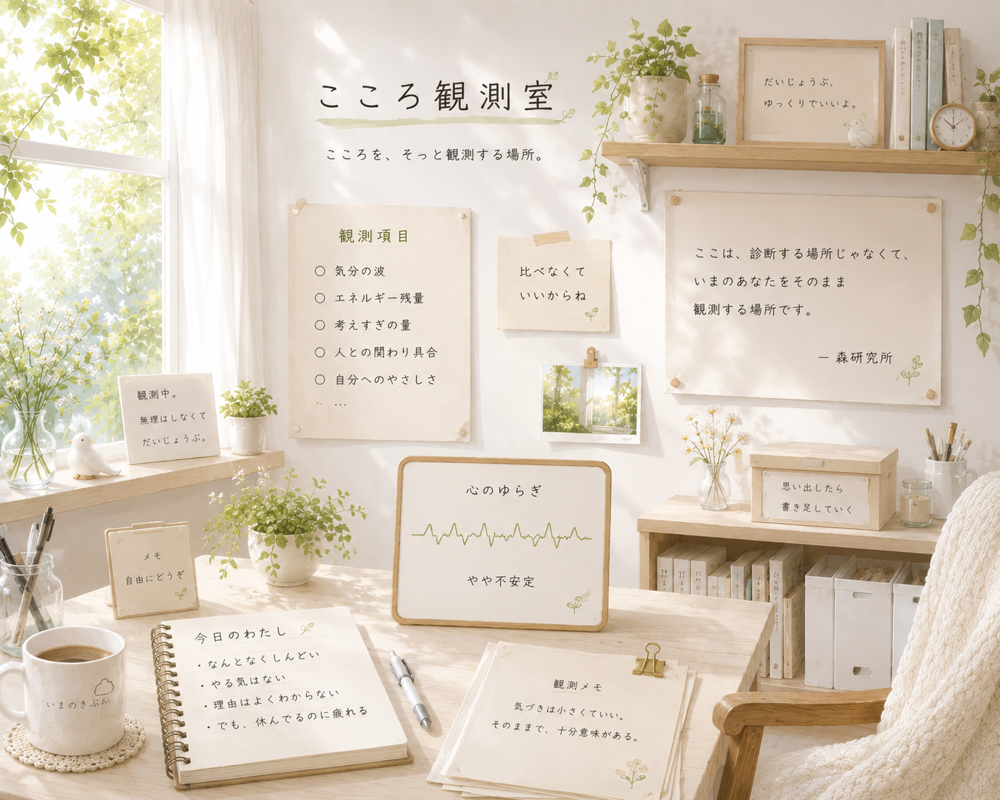

近づきたいのに、少し届かない。その1cmが、関係を続けてくれることがある。

kokoro observation room
研究員の独り言
研究というほど大げさじゃない。けれど、消すには少し惜しい。 日付をつけて、付箋みたいに少しずつ貼っていく場所です。
はっきり見えない日は、世界が隠れているんじゃなくて、 自分の感覚が調整されている日かもしれない。
雑草を抜いていると、考えすぎたものが少し地面に戻っていく。
邪魔だと思った音の中に、あとから必要だったものが混じっている。
正解を出すより、「それ、ちょっと違う」と言える関係のほうが長く続く。
今日も昼の星は見えなかった。でも、探している時間は悪くなかった。
ここに、また独り言を貼る。
blank log
ここに、また増やしていく。
思いついた言葉、変な違和感、ちょっと笑ったこと。 研究員の独り言は、完成させるものではなく、残しておくものです。
森研究所へ戻る